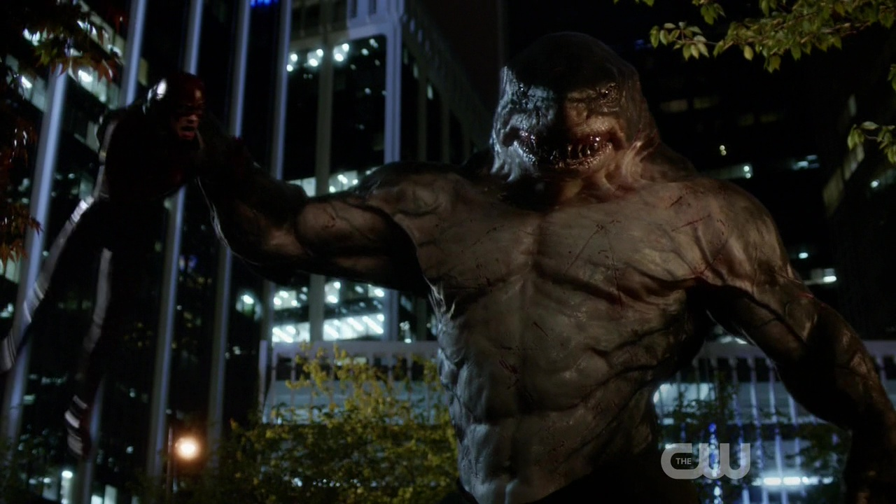

Flash S02|E04 The Fury of Firestorm
Tonight’s episode of Flash set a lot of wheels in motion. It introduced the new half of team Firestorm and even gave the Nuclear Man his first villain. It paved the way for the debut of King Shark. It followed the clandestine exploits of Earth-2’s Harrison Wells. And it continued exploring the turmoil caused by the return of Francine West. This was an eventful episode, but these various pieces didn’t necessarily combine to form a cohesive package.
The search for Professor Stein’s new partner made for an entertaining conflict. The highlight of the evening came early on, as Cisco compared it to hunting for a date on Tinder and described being obliterated by an atomic meltdown as “the ultimate swipe left.” It’s good to know that even when Stein is facing certain doom, this show can keeps things lighthearted and fun.
This week we met both Jefferson “Jax” Jackson (played by Attack the Block’s Franz Drameh) and Henry Hewitt (played by The Unit’s Demore Barnes). Drameh definitely impressed as Jax. The opening flashback established everything viewers needed to know about the character - he’s athletically gifted, ambitious, a little flamboyant and brave enough to throw down his own life in defense of others. Drameh brought a likable charm to the role while also channeling the sadness and frustration Jax felt at being denied a life of greatness. Which, of course, paid off nicely when he agreed to team up with Stein and found his dreams once again within reach.

Barnes didn’t impress quite as much, though that was mainly due to a lack of good material for his character. As usual, the show didn’t spend enough time developing this week’s villain. Hewitt went from being the brash, overconfident science whiz to vengeful supervillain in the span of two scenes. The combination of Barry’s speed and Jax’s flame made for some memorable visuals. I found myself wishing once again that the show would become more ambitious in how it portrays Firestorm’s abilities. He’s not meant to be a simple Human Torch clone. Luckily, Stein’s offhand reference to certain “abilities” he and Ronnie never mastered suggests this will be happening soon enough.
It was definitely fun seeing Wells skulking about while our heroes were busy dealing with the Firestorm situation. He’s not exactly doing himself any favor by going out of his way to look like a shadowy villain, but he’s probably aware that he doesn’t have a lot of fans in this universe. The show has gone out of its way to make Wells look like an antagonist, but the fact that he saved Barry from King Shark means he’ll probably become an ally to Team Flash.
Next weeks episode preview: